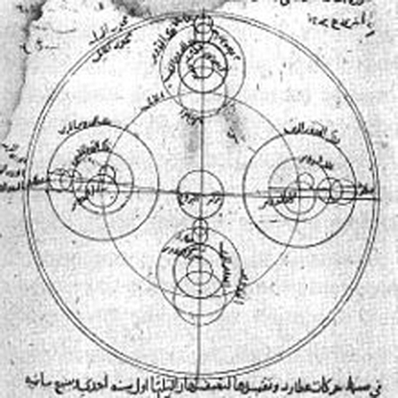
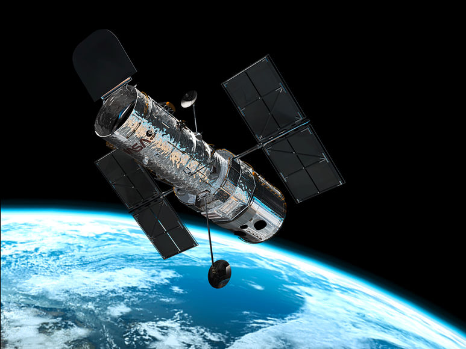

Мерку́рий — ближайшая к Солнцу планета Солнечной системы, наименьшая из планет земной группы. Названа в честь древнеримского бога торговли — быстрого Меркурия, поскольку она движется по небесной сфере быстрее других планет.
Среднее расстояние Меркурия от Солнца чуть меньше 58 млн км (57,91 млн км). Планета обращается вокруг Солнца за 88 земных суток. Видимая звёздная величина Меркурия колеблется от −1,9 до 5,5, но его нелегко заметить из-за близости к Солнцу.
Меркурий относится к планетам земной группы. По своим физическим характеристикам Меркурий напоминает Луну. У него нет естественных спутников, но есть очень разрежённая атмосфера. Планета обладает крупным железным ядром, являющимся источником магнитного поля, напряжённость которого составляет 0,01 от земного магнитного поля. Ядро Меркурия составляет 83 % от всего объёма планеты. Температура на поверхности Меркурия колеблется от 80 до 700 К (от −190 до +430 °C). Солнечная сторона нагревается гораздо больше, чем полярные области и обратная сторона планеты.
-(m)3,33022⋅1023 кг
0,055274 земной
Экваториальный радиус-2439,7 км
Полярный радиус-2439,7 км
Средний радиус-2439,7 ± 1,0 км (0,3829 земного)
Меркурий находится близко к Солнцу, поэтому эффекты общей теории относительности проявляются в его движении в наибольшей мере среди всех планет Солнечной системы.
Уже в 1859 году французский математик и астроном Урбен Леверье сообщил, что существует медленная прецессия перигелия Меркурия, которая не может быть полностью объяснена на основе расчёта влияния известных планет согласно ньютоновской механике.

42,0 % кислород 29,0 % натрий 22,0 % водород 6,0 % гелий 0,5 % калий 0,5 % остальные (вода, углекислый газ, азот, аргон, ксенон, криптон, неон, кальций, магний)
0°N, 0°W 100 K (−173 °C) 340 К (67 °C) 700 К (427 °C) 85°N, 0°W 80 К (−193 °C) 200 К (−73 °C) 380 К (107 °C)
Наиболее раннее известное наблюдение Меркурия было зафиксировано в таблицах «Муль апин» (сборник вавилонских астрологических таблиц).
Это наблюдение, скорее всего, было выполнено ассирийскими астрономами примерно в XIV веке до н. э Шумерское название, используемое для обозначения Меркурия в таблицах «Муль апин», может быть транскрибировано в виде UDU.IDIM.GU\U4.UD («прыгающая планета»). Первоначально планету ассоциировали с богом Нинуртой, а в более поздних записях её называют «Набу» в честь бога мудрости и писцового искусства
Первое телескопическое наблюдение Меркурия было сделано Галилео Галилеем в начале XVII века. Хотя он наблюдал фазы Венеры, его телескоп не был достаточно мощным, чтобы наблюдать фазы Меркурия. 7 ноября 1631 года Пьер Гассенди сделал первое телескопическое наблюдение прохождения планеты по диску Солнца[102]. Момент прохождения был вычислен до этого Иоганном Кеплером. В 1639 году Джованни Зупи с помощью телескопа открыл, что орбитальные фазы Меркурия подобны фазам Луны и Венеры. Наблюдения окончательно продемонстрировали, что Меркурий обращается вокруг Солнца.
Очень редко случается покрытие одной планетой диска другой, наблюдаемое с Земли. Венера покрывает Меркурий раз в несколько столетий, и это событие наблюдалось только один раз в истории — 28 мая 1737 года Джоном Бевисом в Королевской Гринвичской обсерватории. Следующее покрытие Венерой Меркурия будет 3 декабря 2133 года
Близость Солнца создаёт некоторые проблемы и для телескопического изучения Меркурия. Так, например, телескоп «Хаббл» никогда не использовался и не будет использоваться для наблюдения этой планеты. Его устройство не позволяет проводить наблюдения близких к Солнцу объектов — при попытке сделать это аппаратура получит необратимые повреждения
Вверх| Главная | Венера | Земля | Марс | Юпитер | Сатурн | Уран | Нептун |
|---|